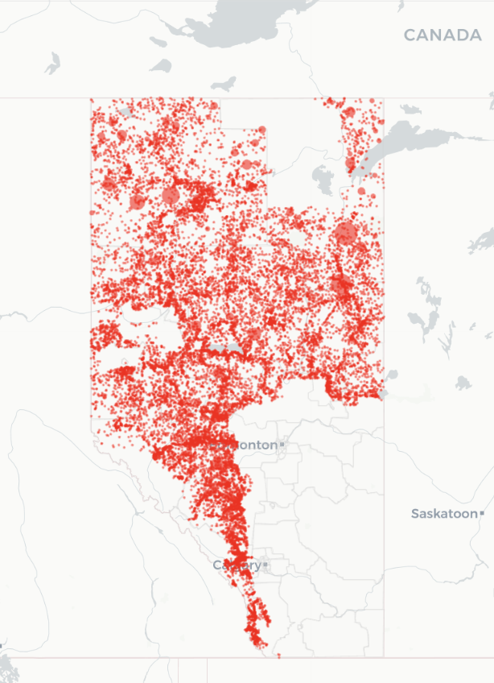
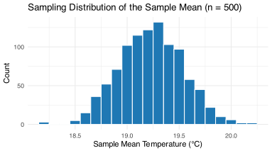

Fundamentals of Sampling and Variability
DSCI 200
Katie Burak, Gabriela V. Cohen Freue
Last modified – 11 January 2026
\[ \DeclareMathOperator*{\argmin}{argmin} \DeclareMathOperator*{\argmax}{argmax} \DeclareMathOperator*{\minimize}{minimize} \DeclareMathOperator*{\maximize}{maximize} \DeclareMathOperator*{\find}{find} \DeclareMathOperator{\st}{subject\,\,to} \newcommand{\E}{E} \newcommand{\Expect}[1]{\E\left[ #1 \right]} \newcommand{\Var}[1]{\mathrm{Var}\left[ #1 \right]} \newcommand{\Cov}[2]{\mathrm{Cov}\left[#1,\ #2\right]} \newcommand{\given}{\ \vert\ } \newcommand{\X}{\mathbf{X}} \newcommand{\x}{\mathbf{x}} \newcommand{\y}{\mathbf{y}} \newcommand{\P}{\mathcal{P}} \newcommand{\R}{\mathbb{R}} \newcommand{\norm}[1]{\left\lVert #1 \right\rVert} \newcommand{\snorm}[1]{\lVert #1 \rVert} \newcommand{\tr}[1]{\mbox{tr}(#1)} \newcommand{\brt}{\widehat{\beta}^R_{s}} \newcommand{\brl}{\widehat{\beta}^R_{\lambda}} \newcommand{\bls}{\widehat{\beta}_{ols}} \newcommand{\blt}{\widehat{\beta}^L_{s}} \newcommand{\bll}{\widehat{\beta}^L_{\lambda}} \newcommand{\U}{\mathbf{U}} \newcommand{\D}{\mathbf{D}} \newcommand{\V}{\mathbf{V}} \]
Attribution
This material is adapted from Chapters 5 of Elementary Statistics with R.
Learning Objectives
Distinguish between a population and a sample from a finite population.
Define commonly used population parameters and their corresponding point estimates.
Identify the population, sample, parameters and point estimates in a given scenario.
Explain what sampling variability is and how it arises from samples drawn at random.
Define standard error of an estimator and describe how it relates to sampling variability.
The Data: Wildfires in Alberta
- Alberta has been heavily affected by wildfires in recent years.
- Wildfires cause environmental, economic and social harm:
- Destruction of forests and infrastructure
- Widespread evacuations
- Disproportionate impacts on rural and Indigenous communities
- Data helps us plan and respond more effectively and equitably.
Packages
We will load wildfire data from the diversedata R package:
# A tibble: 6 × 35
year fire_number current_size size_class latitude longitude fire_origin
<dbl> <chr> <dbl> <chr> <dbl> <dbl> <chr>
1 2006 PWF001 0.1 A 56.2 -117. Land Owner
2 2006 EWF002 0.2 B 53.6 -116. Fire Department
3 2006 EWF001 0.5 B 53.6 -116. Fire Department
4 2006 EWF003 0.01 A 53.6 -116. Industry
5 2006 PWF002 0.1 A 56.2 -117. Fire Department
6 2006 CWF001 0.2 B 51.2 -115. Fire Department
# ℹ 28 more variables: general_cause <chr>, responsible_group <chr>,
# activity_class <chr>, true_cause <chr>, fire_start_date <dttm>,
# detection_agent_type <chr>, detection_agent <chr>,
# assessment_hectares <dbl>, fire_spread_rate <dbl>, fire_type <chr>,
# fire_position_on_slope <chr>, weather_conditions_over_fire <chr>,
# temperature <dbl>, relative_humidity <dbl>, wind_direction <chr>,
# wind_speed <dbl>, fuel_type <chr>, initial_action_by <chr>, …[1] 26551 35Population
A population is a collection of all subjects or observations we are interested in (e.g., all UBC students).
For today’s discussion, we will think of the wildfire data as a finite population, consisting of 26551 wildfire records in Alberta from 2006-2024.

Source: diverse-data-hub.github.io
Temperature
- Let’s focus on all wildfire-related temperature values:

Parameters
- From our population distribution of temperature, we may want to compute some quantities (e.g., mean, median, standard deviations).
- A parameter is a numerical quantity that describes the population.
- Here are some parameters computed from our population of wildfire temperature’s:
wildfire |>
summarise(
mean_temp = mean(temperature, na.rm = TRUE),
med_temp = median(temperature, na.rm = TRUE),
var_temp = var(temperature, na.rm = TRUE),
sd_temp = sd(temperature, na.rm = TRUE),
min_temp = min(temperature, na.rm = TRUE),
max_temp = max(temperature, na.rm = TRUE)
)# A tibble: 1 × 6
mean_temp med_temp var_temp sd_temp min_temp max_temp
<dbl> <dbl> <dbl> <dbl> <dbl> <dbl>
1 17.9 19 60.1 7.75 -39 45Sample
In practice, it is fairly uncommon to have data on the entire population.
A sample is a subset of our population that we will use to draw conclusions about the larger population.

Source: Scribbr: Population vs. Sample
Sample Wildfire Data
Instead of looking at the whole population, let’s take a sample of size \(n=100\).
# A tibble: 6 × 36
# Groups: replicate [1]
replicate year fire_number current_size size_class latitude longitude
<int> <dbl> <chr> <dbl> <chr> <dbl> <dbl>
1 1 2007 HWF214 33.5 C 59.2 -117.
2 1 2008 SWF264 0.02 A 56 -113.
3 1 2008 GWF129 0.2 B 55.1 -117.
4 1 2014 EWF011 0.01 A 53.5 -117.
5 1 2012 PWF134 0.01 A 57.6 -118.
6 1 2021 LWF166 0.01 A 54.9 -112.
# ℹ 29 more variables: fire_origin <chr>, general_cause <chr>,
# responsible_group <chr>, activity_class <chr>, true_cause <chr>,
# fire_start_date <dttm>, detection_agent_type <chr>, detection_agent <chr>,
# assessment_hectares <dbl>, fire_spread_rate <dbl>, fire_type <chr>,
# fire_position_on_slope <chr>, weather_conditions_over_fire <chr>,
# temperature <dbl>, relative_humidity <dbl>, wind_direction <chr>,
# wind_speed <dbl>, fuel_type <chr>, initial_action_by <chr>, …Statistics
- Now, from our sample distribution of temperature, we may want to compute some numerical quantities as we did before.
- A statistic is a numerical quantity that describes the sample.
- When we use a statistic to estimate a population parameter, they are often referred to as point estimates.
- Here are some statistics computed from our population of wildfire temperature’s:
wildfire_sample |>
summarise(
mean_temp = mean(temperature, na.rm = TRUE),
med_temp = median(temperature, na.rm = TRUE),
var_temp = var(temperature, na.rm = TRUE),
sd_temp = sd(temperature, na.rm = TRUE),
min_temp = min(temperature, na.rm = TRUE),
max_temp = max(temperature, na.rm = TRUE), .groups = "drop"
)# A tibble: 1 × 7
replicate mean_temp med_temp var_temp sd_temp min_temp max_temp
<int> <dbl> <dbl> <dbl> <dbl> <dbl> <dbl>
1 1 17.1 18 52.4 7.24 -3 30Common parameters and their point estimates
| Population Parameter | Description | Point Estimate | Description |
|---|---|---|---|
| \(\mu\) | Population mean | \(\bar{x}\) | Sample mean |
| \(\tilde{\mu}\) or \(M\) | Population median | \(\tilde{x}\) | Sample median |
| \(\sigma\) | Population standard deviation | \(s\) | Sample standard deviation |
| \(p\) | Population proportion | \(\hat{p}\) | Sample proportion |
| \(\rho\) | Population correlation | \(r\) | Sample correlation |
iClicker 1: Another sample
Suppose we take a new random sample of size \(n = 100\) from the wildfire data and we calculate the mean temperature again. What do you expect?
- The new sample mean will be the same as before
- The new sample mean will be the same as before
- The new sample mean will likely be different, but close to the first one
- The new sample mean will likely be different, but close to the first one
- The new sample mean has no relationship with the first one
- We need more information
Computing another sample
- We can see that in a new sample of size 100 the sample mean of 17.19 is quite close to our previous sample mean of 17.11, although they aren’t exactly the same.
library(tidyverse)
wildfire <- read_csv("data/wildfire.csv")
wildfire <- wildfire |> drop_na()
set.seed(123)
wildfire_sample2 <- wildfire |> rep_sample_n(size = 100)
wildfire_sample2 |>
select(temperature) |>
summarise(
mean_temp = mean(temperature, na.rm = TRUE)
) # A tibble: 1 × 2
replicate mean_temp
<int> <dbl>
1 1 18.6# Label each sample
sample1_labeled <- wildfire_sample |> mutate(sample = "Sample 1")
sample2_labeled <- wildfire_sample2 |> mutate(sample = "Sample 2")
# Combine into one dataset
combined_samples <- bind_rows(sample1_labeled, sample2_labeled)
# Calculate means
(mean1 <- mean(wildfire_sample$temperature, na.rm = TRUE))[1] 17.11868[1] 18.624# Plot
ggplot(combined_samples, aes(x = temperature, fill = sample)) +
geom_histogram(binwidth = 2, alpha = 0.6, position = "identity", color = "white") +
geom_vline(xintercept = mean1, linetype = "dashed", color = "#1f78b4", linewidth = 1) +
geom_vline(xintercept = mean2, linetype = "dashed", color = "#e31ad1", linewidth = 1) +
scale_fill_manual(values = c("Sample 1" = "#1f78b4", "Sample 2" = "#e31ad1")) +
labs(
title = "Overlayed Histograms of Two Wildfire Samples",
x = "Temperature (°C)",
y = "Count",
fill = "Sample") +
theme_minimal()Sampling variability
- If we draw a different random sample, we get a different set of temperatures.
- That means our point estimate (e.g., sample mean) will also likely change.
- The changes in point estimates across samples is called sampling variability.
The sampling distribution
- If we took many samples of the same size from the population and calculated the sample mean each time, the distribution of those means would form a sampling distribution.
- In our case, the sampling distribution of the sample mean shows how the mean varies from sample to sample.
Let’s use this sampling distribution app, by Dr. Whitlock (UBC), to understand what the sampling distribution is.
Note: The app does not use a finite population. It generates data using a Normal distribution (we will learn this next class).
iClicker 2: fish data
Use the default values \(\mu =106\) and \(\sigma = 30\) and generate a sample of size n = 10.
After measuring all sampled fish, the app shows a histogram in the middle panel that visualizes:
- The population distribution
- The sample distribution
- The sampling distribution
- None of the above
iClicker 3: fish measurements
Calculate the sample mean and compare it with the people around you. Which statement is most accurate?
- We all got the population mean equal to 106
- We all got the same sample mean close to 106
- We all got different sample means close to 106
- None of the above
iClicker 4: Sampling distribution
Use the tab “MEANS FROM MANY SAMPLES” to generate many sample means.
The app will not show individual samples, only the sample means from each sample.
The app now displays the distribution of the sample means. Compare what you see with the people around you. What do you observe?
- The distribution of the sample means is similar to the sample distribution of fish lengths
- We all get the same distribution of sample means
- We all get different distributions, but look like the sample distribution of fish lengths
- We all get different distributions, but look bell-shaped
Our turn in R
Imagine repeating our wildfire sampling process many times:
- Take a random sample of size \(n = 100\)
- Compute the sample mean temperature
- Repeat this 1000+ times
A plot of the sample means allows us to visualize the sampling distribution of the sample mean.
Discuss
What patterns do you see in the distribution (think about shape, center and spread)?
How does this compare to the histogram of the full population?
What would happen if we increased or decreased the sample size?
Sample size
- Now, let’s see how increasing the sample size to 500 impacts the sampling distribution.

Impact of sample size on sampling distributions
As sample size increases, the sampling distribution of the sample mean becomes narrower.
Larger samples result in sample means that are more closely clustered around the true population mean, whereas smaller samples show greater variability and a wider spread of sample means.
Why do we care?
- As a statistician, you don’t know the true population parameters, only your sample data!
- From a sample, we can compute the sample mean \(\bar{x}\).
- This is our best guess at the population mean \(\mu\), which is typically not observed.
- But if we had taken a different sample, we might have gotten a different \(\bar{x}\).
- The standard error helps us understand how much \(\bar{x}\) might vary from sample to sample.
Standard error
- The standard error (SE) measures how much a sample statistic (like the mean) is expected to vary across different random samples.
- It tells us how precise our estimate is.
- A smaller SE means our estimate is likely close to the population value
- A larger SE means more uncertainty in our estimate
- A smaller SE means our estimate is likely close to the population value
Standard error of the sample mean
- The standard error of the sample mean is estimated by:
\[SE(\bar{x}) = \frac{s}{\sqrt{n}}\]
where
- \(s\) is the sample standard deviation
- \(n\) is the sample size
This estimates the standard deviation of the sample mean across repeated random samples.
Computing the SE
Let’s calculate the standard error of the sample mean temperature from our wildfire sample (\(n = 100\)):
wildfire_sample |>
summarise(
n = sum(!is.na(temperature)),
s = sd(temperature, na.rm = TRUE),
se_xbar = s / sqrt(n)
)# A tibble: 1 × 4
replicate n s se_xbar
<int> <int> <dbl> <dbl>
1 1 91 7.24 0.759This value tells us how much the sample mean is expected to vary across repeated samples of size 100.
What about other estimators?
- Other estimators (like medians, proportions, or standard deviations) also have standard errors.
- Each has its own formula or method to estimate variability.
- Today, we are focusing on the standard error of the mean, but the same general idea applies:
- Use the sample to estimate how much a statistic would vary across samples
Key Takeaways
- A population includes all observations of interest; a sample is a subset we actually collect
- A parameter describes the population (e.g., population mean $ $), but it’s usually unknown
- A statistic (like the sample mean \(\bar{x}\)) is a point estimate of the parameter, based on the sample
- Sampling variability means statistics will vary from one random sample to another
- The standard error (SE) measures how much a statistic is expected to vary across samples
- A smaller SE means the estimate is more precise — and we can achieve that with a larger sample size
UBC DSCI 200